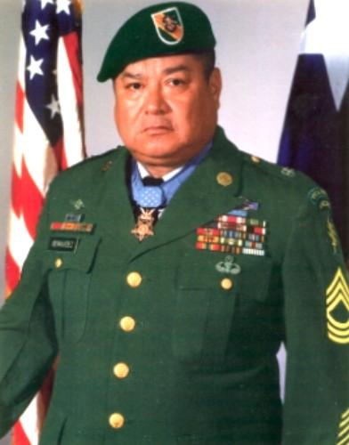

Roy Benavidez
The most awesome, unstoppable solider ever

Roy Benavidez wearing his light blue metal of honor, which he received for saving the lives of eight men in an unstoppable manner while sustaing 9 severe injuries and gunshot wounds during one intense battle.
Here's a time line of that fateful night:
- Sergeant Benavidez learns his friend Leroy Wright, who had recently saved Benavidez' life, was part of a stranded special forces team under heavy fire.
- He grabs a bag of medical supplies and instinctively volunters to board a helicopter for another rescue attempt.
- Realizing that all the team members were either dead or wounded and unable to move to the pickup zone, he directed the aircraft to a nearby clearing while he jumped from the hovering helicopter, and ran approximately 75 meters under withering small-arms fire to the crippled team.
- Prior to reaching the team's position he was wounded in his right leg, face, and head.
- Sgt Benavidez then directed a new extraction attempt and dragged half of the wounded team to the aircraft under enemy fire.
- Next he returned to successfully reclaim classified documents from the dead team leader and was wounded by a bullet to his abdomen and grenade fragments to his back.
- At nearly the same time the pilot of the rescue craft was killed and the rescue helo crashed.
- Sgt Benavidez once again resuced the wounded from the overturned aircraft and organized a defensive perimeter distributing water and ammunition.
- He was wounded again in his thigh while administering first aid to others and calling in air support to protect his team for the next 6 hours.
- While ferrring his comrades to the latest rescue helicopter, he was clubbed in his head and arms before killing his adversary.
- Upon reaching the aircraft, he killed two enemy soliders who had snuck up behind the aircraft, thereby saving yet another rescue attemp.
- Only after securing all documentation and wounded did he allow himself to be pulled into the extraction aircraft.